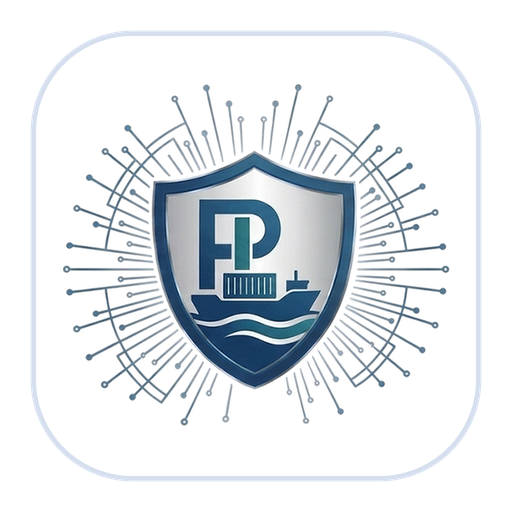

Abriendo el simulador…
No se puede abrir el simulador sin internet. Revisa tu señal o tu Wi-Fi y vuelve a intentarlo.
Abre index.html, pega en URL_APP la dirección /exec del simulador y vuelve a subir el archivo.
Instala Portus Lab en tu pantalla de inicio.